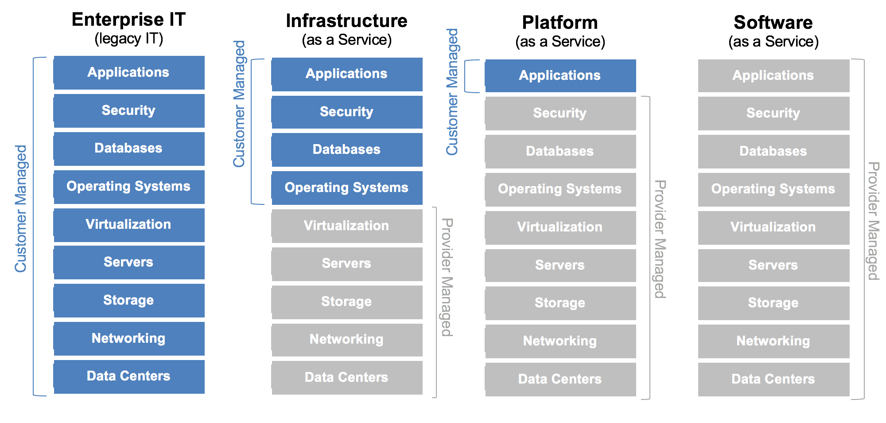
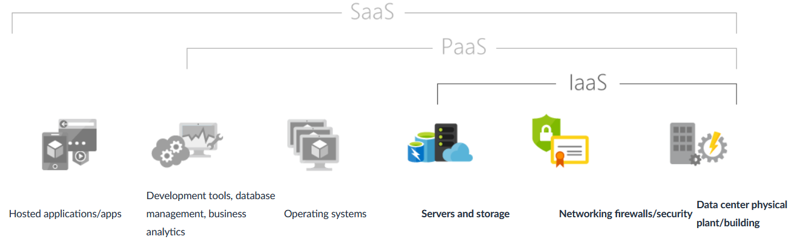
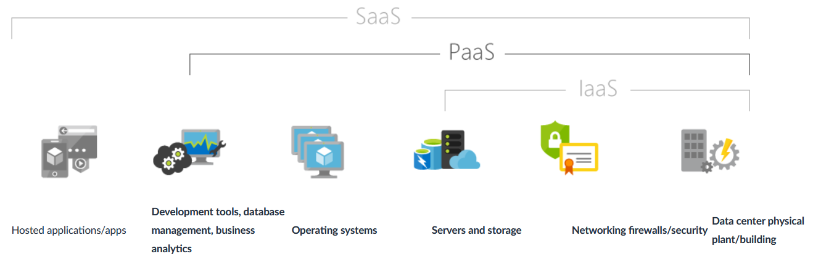

Cloud Computing
Instructor: Chris Fulton
Learning Objectives
- What is Cloud Computing?
- Cloud Computing - Definition | Vendors | Services
- Cloud Strategy - Public | Private | Hybrid
- Delivery Models - IAAS | PAAS | SAAS | FAAS
- Infrastructure As A Service
- Platform As A Service
- Software as a Service
- Function as a Service
What is the Cloud Computing?
a method of providing shared computing resources, including applications, computing, storage, networking, development, and deployment platforms as well as business processes.
Why use Cloud Computing?
Efficiency
Capacity Planning
Secure
Global Infrastructure
Scalable
Minimal Risk
Cost Savings
Agility
Competitive
Who are the major cloud vendors?

Cloud Strategy
Types of Clouds
Public Cloud ✦ Private Cloud ✦ Hybrid Cloud
Public Cloud
- Highly scalable data that hides underlying infrastructure from the consumer
- Primarily available in an on-demand manner that is multi-tenancy where you share some networking with other cloud customers
Private Cloud
- Created and managed by a third party for the exclusive use of one enterprise. Not open for public consumption. Sits behind firewall.
- Services can be installed within a customers on-premises data center behind firewall.
Hybrid Cloud
- Combination of private cloud and public cloud; data exchanged between private and public cloud
- End-users won't know the difference. Most companies adobpt this approach.
Multi-Cloud Strategy
Delivery Models Activity
Read the descriptions of the boxes on the left and drag and drop the descriptions in the respective boxes on the right. Hybrid or Non-Hybrid
Cloud Delivery Models
Delivery Models
Infrastructure as a Service
Common Scenarios of IaaS
Test and development
Teams can quickly set up and dismantle test and development environments, bringing new applications to market faster. IaaS makes it quick and economical to scale up dev-test environments up and down.
Website hosting
Running websites using IaaS can be less expensive than traditional web hosting.
Web apps
IaaS provides all the infrastructure to support web apps, including storage, web and application servers, and networking resources. Organizations can quickly deploy web apps on IaaS and easily scale infrastructure up and down when demand for the apps is unpredictable.
Big data analysis
Big data is a popular term for massive data sets that contain potentially valuable patterns, trends, and associations. Mining data sets to locate or tease out these hidden patterns requires a huge amount of processing power, which IaaS economically provides.
Advantages of IaaS
Eliminates capital expense and reduces ongoing cost
IaaS sidesteps the upfront expense of setting up and managing an on-site datacenter, making it an economical option for start-ups and businesses testing new ideas.
Innovate rapidly
As soon as you’ve decided to launch a new product or initiative, the necessary computing infrastructure can be ready in minutes or hours, rather than the days or weeks—and sometimes months—it could take to set up internally.
Increase stability, reliability, and supportability
With IaaS there’s no need to maintain and upgrade software and hardware or troubleshoot equipment problems. With the appropriate agreement in place, the service provider assures that your infrastructure is reliable and meets SLAs.
Better security
With the appropriate service agreement, a cloud service provider can provide security for your applications and data that may be better than what you can attain in-house.
Platform as a Service
Common Scenarios of PaaS
Development framework
TPaaS provides a framework that developers can build upon to develop or customize cloud-based applications. Similar to the way you create an Excel macro, PaaS lets developers create applications using built-in software components. Cloud features such as scalability, high-availability, and multi-tenant capability are included, reducing the amount of coding that developers must do.
Analytics or business intelligence
Tools provided as a service with PaaS allow organizations to analyze and mine their data, finding insights and patterns and predicting outcomes to improve forecasting, product design decisions, investment returns, and other business decisions.
Additional services
PaaS providers may offer other services that enhance applications, such as workflow, directory, security, and scheduling.
Advantages of PaaS
Use sophisticated tools affordably
A pay-as-you-go model makes it possible for individuals or organizations to use sophisticated development software and business intelligence and analytics tools that they could not afford to purchase outright.
Cut coding time
PaaS development tools can cut the time it takes to code new apps with pre-coded application components built into the platform, such as workflow, directory services, security features, search, and so on.
Support geographically distributed development teams
Because the development environment is accessed over the Internet, development teams can work together on projects even when team members are in remote locations.
Efficiently manage the application lifecycle
PaaS provides all of the capabilities that you need to support the complete web application lifecycle: building, testing, deploying, managing, and updating within the same integrated environment.
Software as a Service

Common Scenarios of SaaS
If you’ve used a web-based email service such as Outlook, Hotmail, or Yahoo! Mail, then you’ve already used a form of SaaS. With these services, you log into your account over the Internet, often from a web browser. The email software is located on the service provider’s network, and your messages are stored there as well. You can access your email and stored messages from a web browser on any computer or Internet-connected device.
The previous examples are free services for personal use. For organizational use, you can rent productivity apps, such as email, collaboration, and calendaring; and sophisticated business applications such as customer relationship management (CRM), enterprise resource planning (ERP), and document management. You pay for the use of these apps by subscription or according to the level of use.
Advantages of SaaS
Gain access to sophisticated applications
To provide SaaS apps to users, you don’t need to purchase, install, update, or maintain any hardware, middleware, or software. SaaS makes even sophisticated enterprise applications, such as ERP and CRM, affordable for organizations that lack the resources to buy, deploy, and manage the required infrastructure and software themselves.
Use free client software
Users can run most SaaS apps directly from their web browser without needing to download and install any software, although some apps require plugins. This means that you don’t need to purchase and install special software for your users.
Mobilize your workforce easily
SaaS makes it easy to “mobilize” your workforce because users can access SaaS apps and data from any Internet-connected computer or mobile device. You don’t need to worry about developing apps to run on different types of computers and devices because the service provider has already done so. In addition, you don’t need to bring special expertise onboard to manage the security issues inherent in mobile computing. A carefully chosen service provider will ensure the security of your data, regardless of the type of device consuming it.
Access app data from anywhere
With data stored in the cloud, users can access their information from any Internet-connected computer or mobile device. And when app data is stored in the cloud, no data is lost if a user’s computer or device fails.
Activity
With an understanding of IaaS, PaaS and SaaS. Do so research on some of the services and determine if they are IaaS, PaaS or SaaS
Step 1
On a sheet of paper - create three categories IaaS, PaaS, SaaS
Step 2
Within the AWS management console. Review the various services and list two services for each category.
Step 3
Do some research on service outside of AWS and provide one cloud vendor for each of the three categories
References
- https://github.com/docker/labs/blob/master/beginner/chapters/webapps.md
- https://dzone.com/articles/a-developers-guide-to-docker-docker-compose